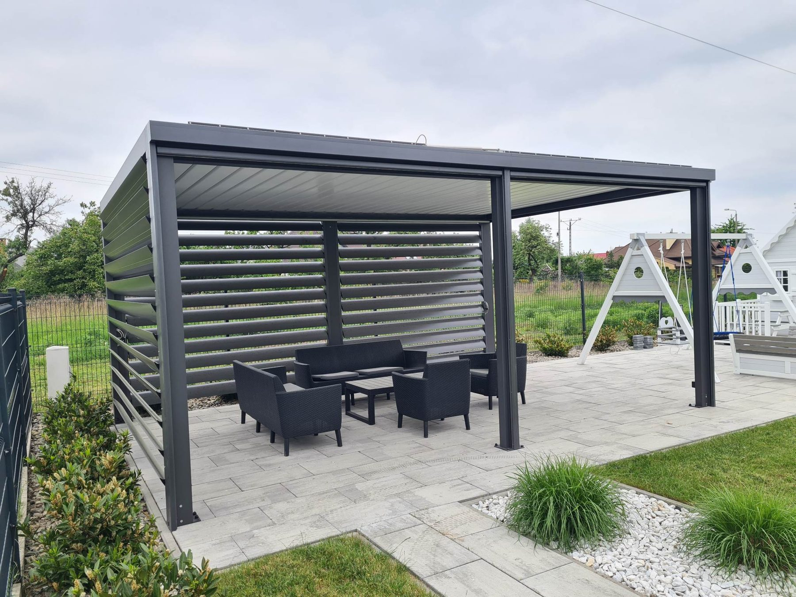
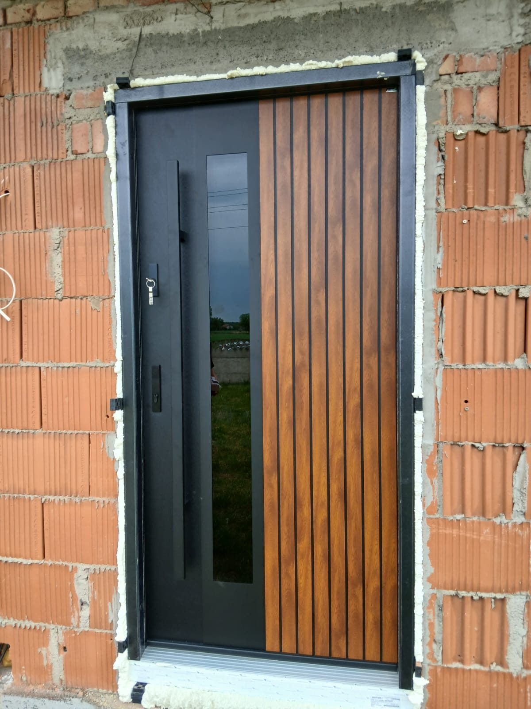
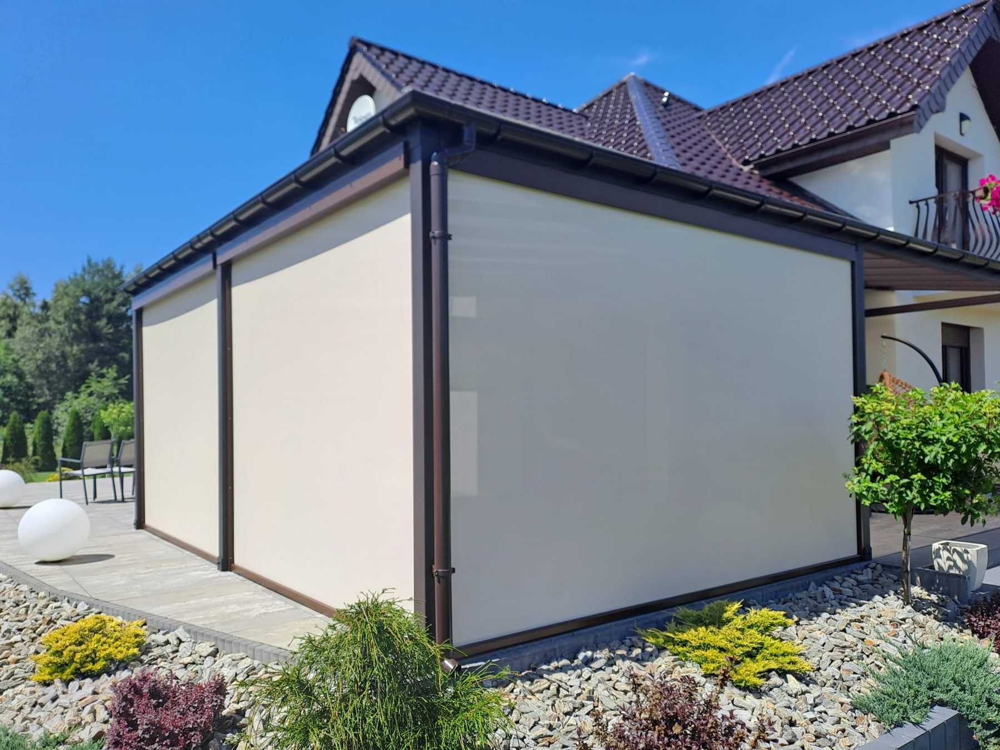
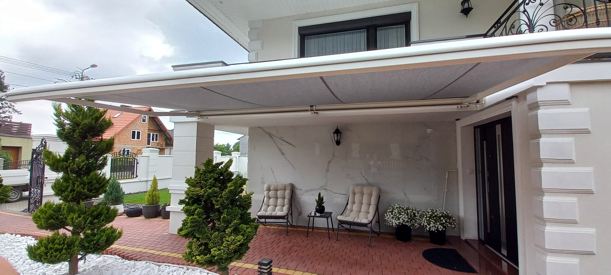
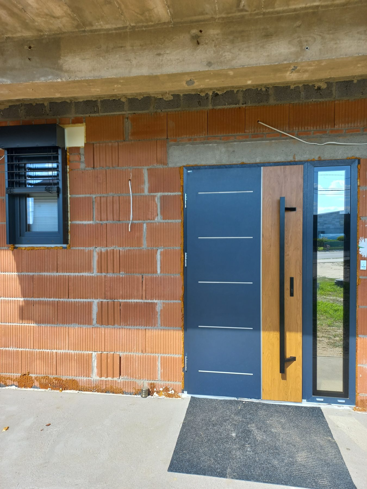
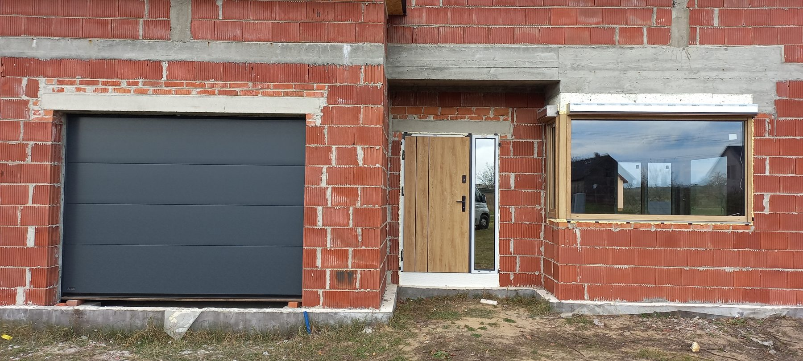
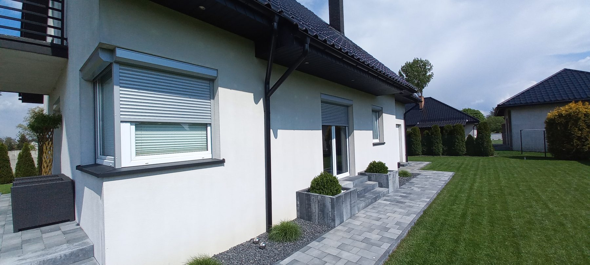
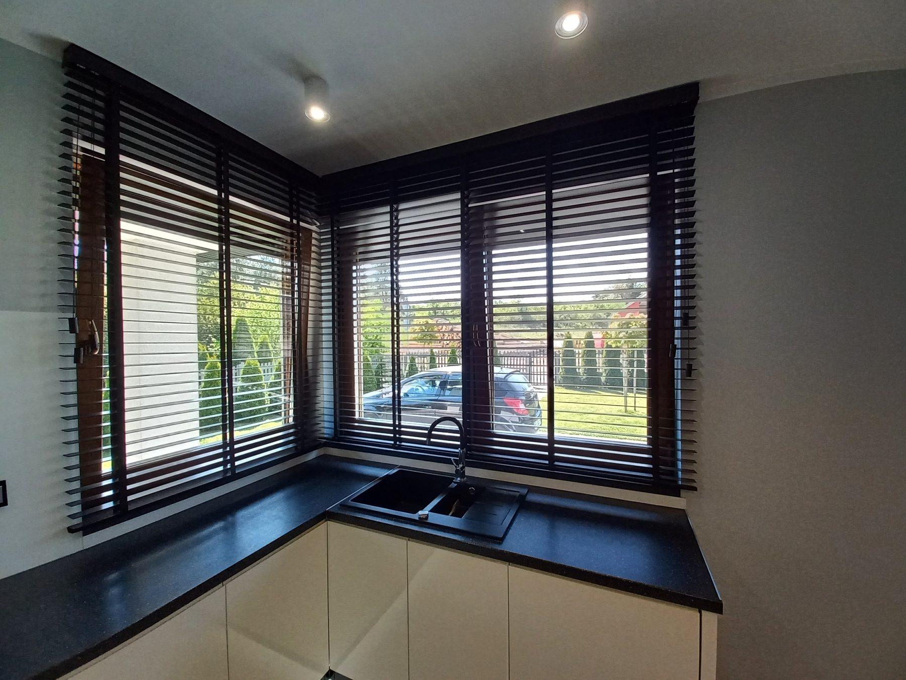
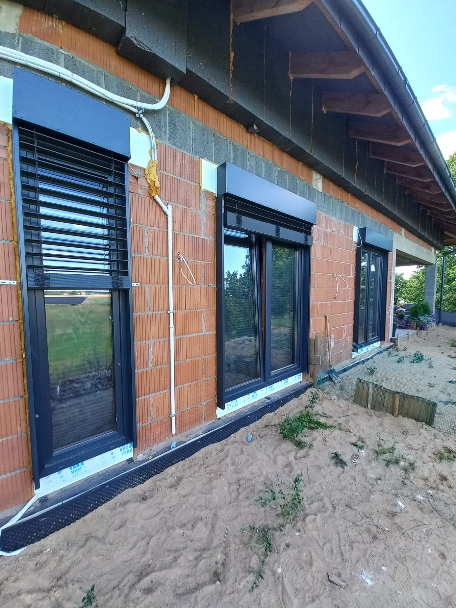
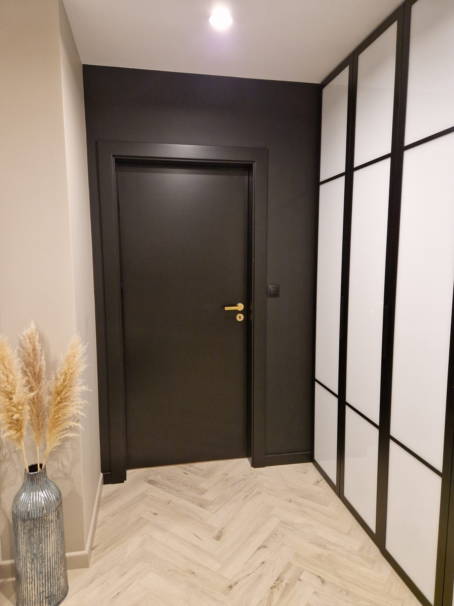

Zobacz, jak nasze systemy wyglądają w prawdziwych domach — okna, drzwi, bramy, pergole i osłony.










Zadbamy o każdy detal — od dokładnego pomiaru laserowego na Twojej budowie po czysty i bezbłędny montaż z gwarancją premium.